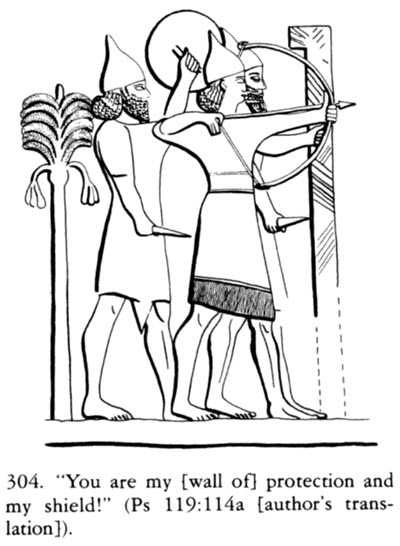
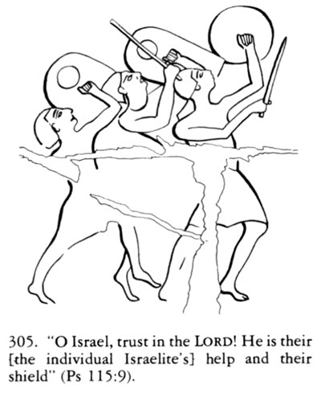
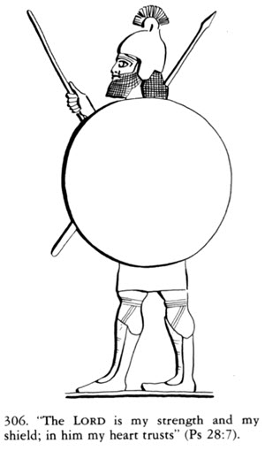
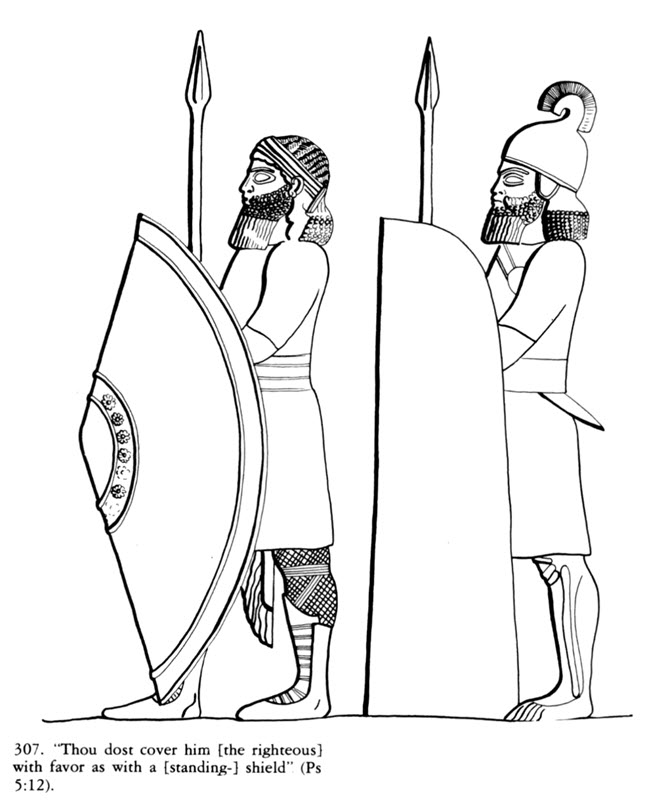

מגן - māgēn - shield
BDB (Blue Letter Bible)1978 Keel, Symbolism of the Biblical World, p. 222-4
• English: “b. "My Shield"
In war, the suppliant's intimacy with Yahweh found its most moving expression in the entreaty that Yahweh serve as the suppliant's shield-bearer
(Ps 35:2). Strictly speaking, "shield-bearer" implies a subordinate position. The Assyrian general in Fig. 304 is protected by two shield-bearers. One holds the huge siege-shield—actually more a protective wall than a shield. The sḥrh in Ps 91:4 may denote such a portable wall. Holding a (common) round shield (mgn), the other bearer protects the contending general against missiles hurled from above. To summon Yahweh as shield-bearer presupposes that intimacy which permits one to ask a friend to perform a lowly service without in any way offending him.
The frequent predication of Yahweh as the suppliant's shield bears testimony to a strong relation of trust ("my shield": Pss
7:10;
18:2;
28:7; "our shield": Pss
33:20;
59:11; "their shield":
Ps 115:9-11). This is probably a democratization of a confidence motif which originally pertained to the king. Ishtar of Arbela, for example, addresses an Assyrian king as follows: "Asarhaddon, in Arbela I am your gracious shield." The connection of this promise to the cultic site Arbela gives rise to the conjecture that the statement may have been prompted by the shields which adorned the temples of many localities (cf. 139 and 1 Kgs 14:26—27). However that may be, the function of shields in the psalms is clearly protective and not decorative.
Above all, in sieges the shield protected the warrior from missiles of all kinds (305). A stately shield such as that carried by the Assyrian warrior in Fig. 306 could heighten the general sense of security. This was especially true when the shield afforded protection not only from the front but also from the sides, like the heavy Assyrian standing shield of Fig. 307. The standing shield (ṣnh), which went out of use in the seventh century B.C., is mentioned in formulalike contexts in Pss 5:12; 35:2; and 91:4.
In some psalms, "shield" remains no more than an ideogram for protection and security. In such uses, the realm of the concrete is occasionally abandoned. In Ps 3:3, the suppliant praises God as a shield "about me" (or "for me"?). "An ordinary shield provides cover from only one side, but Yahweh protects from every side." (Gunkel) But the question in this passage is whether "shield" is to be understood concretely or whether it has become a thoroughly abstract expression for "protection" [emphasis added] (cf. the piling-up of images in Ps 5:12). In that case, one could no longer contrast "shield" and "Yahweh."” (contra Gunkel)




1984 Freedman - O'Connor TDOT Vol 8 p.87 (pp 74-87)
• VII LXX. The translators of the LXX apparently had no concrete notion of these shields.
Ten different words are used to render the 20 occurrences of ṣinnâ, e.g., thyreós (11 times), dóry, kóntos (both meaning "spear") (1 K. 10:16; Ezk. 39:9).
The rendering of mgn is more consistent: thyreós (9 times), aspís and péltē (5 times each).
In 3 instances an abstract translation is used: 2 S. 22:36 (par. Ps. 18:36[35]) hyperaspismós; Dt. 33:29 uses a form of hyperaspízein.
The divine epithet hyperaspistēs is used in 2 S. 22:3,31 (par. Ps. 18:3,31[2,30]); 28:7; 33:20; 59:12[11]; 115:9-11; 144:2.
Forms of hyperaspízein occur in Gen. 15:1; Prov. 2:7; 30:5; antilḗmptōr in Ps. 3:4[3]; 119:114; boḗtheia in Ps. 7:11[10].
I S. 1:21; Isa. 21:5 attest thyreós; Nah. 2:4[3] hóplon.
In contrast, Ps. 84:10[9] attests hyperaspístés, Ps. 89: 19[18] antílēpsis, and Ps. 47: 10[9] krataiós.
1996 Creach, Yhwh as Refuge and the Editing of the Hebrew Psalter, pp. 29,30
• English:
“Māgēn probably refers to a small round shield (see
Ps. 35.2).
However, māgēn never occurs in descriptions of Yahweh as a shield against enemy arrows,
though there are places such a figurative expression would be appropriate (i.e.
Ps 11.2).
When the psalmist speaks of Yahweh as shield, the language usually lacks such specific battle imagery.
For example,
Ps. 18.31 simply states, māgēn hûʾ lᵉkōl hahôsîm bô.
Likewise, the term is parallel to sēter in
Ps. 119.114
with no further elaboration.
This may mean that māgēn became a dead metaphor, that is, it lost its literal sense, and thus much of its comparative power.
So, for example, Pss.
33.20;
115.9, 10, 11 relate Yahweh as māgēn to Yahweh as ʿēzer ('helper').
Ps 28.7 declares that Yahweh is a 'shield' in whom the psalmist 'trusts'.
LXX reflects this occurrence of māgēn by translating the word as hyperaspistēs
(lit: 'one who holds a shield', thus, 'protector'; see
Ps. 33.20) or antilēmptōr (see
Ps. 119.114)
rather than the more literal reference to a battle instrument (aspistēs or hoplon; see
Ps. 35.2).”
2008 Brueggemann, D.A., "Protection Imagery" in Dictionary of the Old Testament: Wisdom, Poetry, Writings, p. 526
1.2. Armaments.
One armament is defensive, the "shield" (magen, sinna).
Sometimes God provides the shield in the person of his anointed king
(Ps 84:9;
89:18),
but more often God himself takes up the shield and comes to the rescue
(Ps 35:2).
Sometimes a divine characteristic such as salvation
(Ps 18:35), favor
(Ps 5:12) or faithfulness
(Ps 91:4) is the shield,
and sometimes God himself is the shield (e.g.,
Ps 3:3;
18:30;
33:20;
Prov 2:7;
30:5).
So a common divine appellation is "my shield"
(Ps 7:10;
18:2;
28:7;
119:114;
144:2) or "our shield"
(Ps 33:20;
59:11).
J. F. D. Creach (29) wonders if "shield" eventually became a dead metaphor meaning little more than "helper" or "protector,"
because magen is never used of Yahweh as a shield against enemy arrows,
though that figurative expression would sometimes have been appropriate (e.g.,
Ps 11:2; cf.
Eph 6:16).
Indeed, the LXX of Psalms translates it as hyperapistes ("protector") most of the time.
בּעד - bᵊʿaḏ - away from, behind, about, on behalf of
Blue Letter Bible (BDB+) Study Light (BDB+) Sefaria (BDB+) BDBסָבִיב - sāḇîḇ (from v7) - turn (around, aside, back, towards), go (about, around), encircle, surround, change direction.
Blue Letter Bible (BDB+) TWOT 1456bPsalm 3:3[4] in seventy versions
Psalm 3 (10th-6th cent BCE?)
• Hebrew: ואתּה יהוה מגן בּעדי
• My Translation: "You YHWH are a shield about/behind/for me"
LXX (2nd cent BCE)
• Greek: σὺ δέ, Κύριε, ἀντιλήπτωρ μου εἶ
• My Translation: "You Lord, are my supporter/protector"
Targum (4th-7th cent CE??)
• Aramaic: וְאַנְתְּ יְיָ תְּרִיס עֲלֵי
• Latin: "tu autem Domine scutum super me"
• My Translation: "You LORD are a shield over me"
Vulgate (early)
• Latin: "tu autem Domine susceptor meus es"
• My Translation: "You Lord are my sustainer/supporter"
Jerome’s Versio iuxta Hebraicum (392 CE)
• Latin: "tu autem Domine clypeus circa me"
• My Translation: "You Lord are a shield about me"
Aquinas (1225-1274 CE), Lecture on Psalm 3
• Latin: "Et hoc est melius per literam Hieronymi quae dicit, Clypeus meus circa me, quasi defendens me sicut clypeus."
• My Translation: "This is better rendered by Jerome's version which states, 'My shield around me, as it were, defending me like a shield.'"
LeBlanc, Thoma (1665), col 431; [(1856 reprint), p 155]
• Latin: “S. Hieron. vertit: clypeus meus circa me. Hebr. מגן, clypeus. בּעדי baadi, pro me, ad me tuitionem. Chald. scutum super me. q.d. Deus me de caelo tegit: hostes vero sunt in terra et de terra, ideo non nocebunt. Sed suavius est, quod dicatur Deus esse circa nos: omnia enim sic in tuto sunt, infra, supra, a dextris et a sinistris, ante et retro. Ps. 90.5. scuto circumdabit te veritas eius, q.d. veritas eius, seu veracitas et fidelitas, qua tibi auxilium Deus promisit, te circumdabit et proteget : id est, Deus ideo te conservabit, quia id se facturum asseruit. ”
• My Translation: “St. Jerome translates: "my shield around me" Hebrew: מגן, shield. בּעדי baadi, for me, for my protection. Targum: shield over me. That is to say God covers me from heaven; the enemy however, are on the earth, and from the earth, therefore they will do no harm. But it is more comforting to say that God is around us: for then everything is secure - below, above, to the right and to the left, before and behind. Ps 90.5: "His truth will surround you with a shield", that is to say, his truth, both his veracity and faithfulness, by which God promised help, will surround you and protect you. That is, God will thus preserve you, because He has declared that He will do so.”
Rosenmüller, Psalmi: I, (Leipzig, 1821), p. 74
• Latin: “„At Tu, Iova, clypeus es circa me , plus est, [quam si dixisset] clypeus meus, nam clypeorum alii partem corporis tegunt, alii totum corpus muniunt: tu autem mihi es, inquit, vice clypei, qui me undiquaque tegit ac/[et] munit. Alioqui vox usurpaut de praesidii/[praesidio] et protectione” (quotation by Phillips in 1872)
• My Translation: “But you, O Jehovah, are a shield around me,” which is more than if he had said, “my shield,” for some shields cover part of the body, others fortify the whole body: “But you are to me in place of a shield,” he says, “one who covers and fortifies me from every direction.” Otherwise, the word is used concerning defense and protection.
Wette, De, Commentar uber die Psalmen, (Heidelberg, 1829), p. 100
• Deutsch: “Mein Schild ] wörtl. Schild um mich herum. Schild ist Schutz, Rettung.”
• My Translation: “My Shield ] lit. “Shield about me.” Shield is protection, salvation.”
Hengstenberg, Commentar über die Psalmen (Berlin, 1842), p. 64
• Deutsch: Das בּעד entspricht völlig unferem „um,” und dem Griech ἀμφί, Ew.613. um mich her, mich Schützend.
• Commentary on the Psalms (TT Clark:1851), p. 49 “The בּעד corresponds entirely to the German um (Anglice, about), and to the Gr. ἀμφί Ew. p. 613, around me, protecting me.”
Bythner, The Lyre of David: or, an Analysis of the Psalms (Dublin, 1847) , p. 23
• English: [139.] מָגֵן (ma-ghén) a shield, LXX my advocate, protector. From גָנַן he covered, protected. A noun defective, heeman. וּמָגֵן and my shield, Ps. 84.12.
[140.] (ba-עadhée) around me. From עָדָה, he passed over, is formed עַד, to, until, and in the form of regimen, עַדֵי, until, Ps. 83. 18. It usually has the affixes of plur. nouns, R. 101. and accordingly makes עָדֶיךָ, unto thee, Ps. 65.3. Prefixed with ב, בְּעַד, in, for, about, which with affixes changes ( ַ ) into ( ֲ ), R. 121. and punctuates the preceding letter, R. 13. and makes בַּעֲדִי, about, or for me. And the night is light, בַּעֲדֵנִי, about me, Ps. 139.11. LXX. in my luxury (perhaps they read from עֵדֵן, pleasure, delights), בַּעֲדוֹ for him.
Alexander, The Psalms Translated and Explained, (New York, 1850), p. 23
• English: “... a shield about me, or around me, i.e. covering my whole body, not merely part of it, as ordinary shields do.”
Olshausen, Die Psalmen, (Leipzig, 1853), p. 43
• Deutsch: Zwar schützt kein Schild von allen Seiten, (בעדי) wohl aber der Herr gleich einem Schilde.
• My Translation: No shield protects from all sides, (בעדי) however, the Lord protects like a shield.
Delitzch, Commentar über den Psalter (Leipzig, 1859), p. 24
• Deutsch: Stündlich hat er einen vernichtenden Ueberfall zu fürchten, aber Jehova ist das Schild das ihn umschliesst und schirmt.
• My Translation: Every hour he has reason to fear a devastating attack, but Jehovah is the shield that encloses and protects him.
• Biblical commentary on the Psalms Delitzsch, trans. David Eaton 1883 Every hour he has reason to fear an attack that will annihilate him; but Jahve is the shield that covers him before and behind.
Hitzig, Die Psalmen, (Leipzig und Heidelberg, 1863), p. 16
• Deutsch:“בּעדי] Jahve hinter ihm stehend halt ihm den Schild vor (Sach. 12, 8. vgl. 2 Sam. 6, 16.).” [Is this an attempt to harmonize the LXX and MT?]
• English translation by Briggs-Moll, The Psalms, (1872), p. 64: “Jehovah stands behind him and holds His shield before him (Zech. xii. 8; cf. 2 Sam. vi 16).”
Green, A Hebrew Chrestomathy (New York, 1864), p. 220
• English: מָגֵן shield, from גָנַן to protect, a source of protection and defence, Gen. 15:1. בַּעֲדִי, not only before him, but around him; the primary sense of the preposition, according to Gesenius, is, close to me, on all sides of me; according to Hupfeld, between me and everything else.
Spurgeon, The Treasury of David, Volume I, (London, 1870), p. 25
• English: “The word in the original signifies more than a shield; it means a buckler round about, a protection which shall surround a man entirely, a shield above, beneath, around, without and within.”
Rieschl, Das Buch der Psalmen, (1873), p. 16
• Deutsch: Hebr. "- o Herr! Bist Schild um mich Ꝛc."; vgl. Ps 90,5; I Mos 15,1.
• My Translation: Hebrew: "- O Lord, you are a shield around me &c."; cf. Ps 90:5 (91:4?); Gen 15:1
Jennings and Lowe, The Psalms with Introduction and Critical Notes (London, 1877) p. 15
• English: 3. a. "For me," or perhaps "round about me," for מגן , as a subst. of surrounding, may like the verbs of surrounding (cf. Lament. iii. 7) give בעד this signf., if indeed it be not the primary meaning of this preposition. בעד when defined by the verb may also mean behind," and in close connection with such local signfs. the meanings "in the place of," " on behalf of" come into use. בעד is in fact περί both with genit. and accus. LXX. gives the general meaning, ἀντιλήπτωρ μου εἰ.
Hirsch, Die Psalmen, übersetzt und erklärt, (Frankfurt, 1882)p. 12
• Deutsch: weil du mich züch tigend zu einer bessern Zukunft führen willst, bist du מגן בעדי, selbst Schild um mich daß die Gegner, deren Auftreten du zu meiner Züchtigung zulässest, nicht bis zu meinem gänzlichen Verderben vorschreiten können.
• English: Because Thy chastisement is intended to guide me to a better future, Thou art מגן בעדי, Thyself a shield about me, so that the foes, whom Thou hast allowed to come to the fore temporarily in order to chastise me, cannot proceed to destroy me completely.
Hirschfelder, Biblical expositor and people's commentary - Genesis, (Toronto, 1885) p. 216
• English: The Psalmist says, " But Thou, O Lord art מגן בּעדי (magen baädi) a shield about me." (Ps. iii. 4.) I do not mean to say that בּעד (bead) is not used sometimes in the sense behind, but the context will, in those cases, indicate that it must be so rendered.
Duhm, Die Psalmen; erklärt, (Freiburg I.B. Leipzig und Heidelberg, 1899), p. 11
• Deutsch: Aber Jahwe schützt und erhebt den Dichter von Zion aus. וְאַתָּה ist Gegensatz zu den Vielen v. 2 f. Jahwe ist Schild (wie sonst Burg, Rettungsfelsen u. dgl.) um mich, weil er nach allen Seiten deckt, …
• My Translation: But Yahweh protects and raises up the poet from Zion. וְאַתָּה is in contrast to the many v. 2 f. Yahweh is a shield (like a fortress, rock of salvation, etc.) around me, because he covers all sides, …
Baethgen, Die Psalmen, (Göttingen, 1892), p. 8
• Deutsch:“Die Vielen sagten: kein Gott kann ihm helfen. Darauf antwortete der Sanger: Jahve, der Gott Israels, der ewig teue, wird mich schirmen. בּעדי geht nicht auf das Bild, da der Schild nicht auf allen Seiten deckt, sondern auf die Sache. Jahve ist rings um ihn her, ihn schützend wie ein Schild, vgl.
Job 1:10,
Ps 18:3,
119:114.”
• My Translation: The many said: No God can help him. To which the singer replied: Yahweh, the God of Israel, who repents forever, will defend me. בּעדי does not refer to the image, since the shield does not cover on all sides, but rather to the concept. Yahweh is all around him, protecting him like a shield, cf.
Job 1:10,
Ps 18:3,
119:114.
Briggs, A critical and exegetical commentary on the book of Psalms (ICC, 1906), p.25
• English: Yahweh a shield about me] antith. v.2a
Knabenbauer, Commentarius in Psalmos (Roma, 1912), p. 26
• Latin: Dominum vocat suum scutum quo omni ex parte protectus sit, et contra quod scutum arma hostilia nihil valeant. … Bene vertit Hier v. 4 tu autem, Domine, clipeus circa me
• My Translation: He calls the Lord his shield, by which he is protected on all sides, and against which the weapons of the enemy are powerless. … Jerome translates verse 4 well: “But you, O Lord, are a shield around me.”
Boylan, The Psalms : a study of the Vulgate Psalter in the light of the Hebrew text (Dublin, 1920), p. 9
• English: Susceptor is used in the Psalter as = helper or defender. The Hebrew, "Thou, O Yahweh, art a shield round about me," is changed intentionally into the less vivid, but, to the later mind, more respectful: Susceptor meus es tu.
Gunkel, Die Psalmen (HKAT, 1926), p. 14
• Deutsch: Ein gewöhnlicher Schild deckt nur von einer, Jahve aber von allen Seiten; בַּעֲדִי vgl.
Job 1:10
• English: An ordinary shield provides cover from only one side, but Yahweh protects from every side; בַּעֲדִי cf.
Job 1:10
Calès Les Livres des Psaumes (Paris, 1936), p. 110
• Français: 4a) Ici et au ps. CXIX (CXVIII), 114, les LXX traduisent mâghên par ἀντιλήπτωρ (Vulg. : susceptor). Le sens précis est « bouclier rond » ou « rondache ». … Mais à la première impression de crainte a succédé un ressaut de confiance : en face des ennemis, il ya lahvé qui, comme un merveilleux bouclier, enveloppe de toute part le pieux suppliant; il est sa gloire; il relèvera sa tête de l'opprobre et de la tristesse présente; de la montagne sainte, il entendra son cri d'appel.
• My Translation: 4a) Here and in Psalm 119 (118), verse 114, the LXX translates mâghên as ἀντιλήπτωρ (the Vulgate: susceptor). The precise meaning is “round shield” or “rondache.” … But after the initial feeling of fear came a surge of confidence: in the face of his enemies, there is Yahweh, who, like a marvelous shield, surrounds the devout supplicant on all sides; He is his glory; He will lift his head from shame and present sorrow; from the holy mountain, He will hear his cry for help.
Leupold, Exposition of the Psalms (Augsburg Press, 1952), p. 61
• English: Bold enough would be any statement to the effect that the Lord held a shield round about this servant of His. Much bolder is the concept of God Himself as this shield, especially when this shield is "about" him, affording all-sided protection.
Kraus, Psalmen I, (BKAT, 1960)), p. 26
• Deutsch: Menschen seinen Grund. Der Beter weiß Sich wie von einem Schilde von Gottes Gegenwart umgeben und in Gottes Schutz geborgen (vgl. Ps 27:5,6). „Ein gewöhnlicher SchiId deckt nur von einer, Jahwe aber von allen Seiten" (Gunkel). Zu בּעד vgl. Ps 139:11. Daß Jahwe wie ein die Seinen schützt, wird in den Ps öfter gesagt, z.B. Ps 18:3 28:7 119:114.
• English: The petitioner knows that he is surrounded as with a shield by the presence of God and sheltered in God's protection (cf.
Ps. 27:5, 6). "An ordinary shield covers only one side, but Yahweh protects from all sides" (Gunkel). “On בּעד cf.
Ps 139:11. That Yahweh protects his own like a shield is recorded often in the Psalms, e.g., Pss.
18:2,
28:7;
119:114.”
Keel, Die Welt der altorientalischen Bildsymbolik und des Alte Testament : am Beispiel der Psalmen, (Zurich, 1972), pp. 201, 202
• Deutsch: In manchen Pss ist «Schild» nur mehr ein Ideogramm für Schutz und Sicherheit. Als solches verläßt es gelegentlich den Bereich des Anschaulichen. In 3,4 preist der Beter Gott als Schild «um mich» (oder «fiir mich»?). «Ein gewohnlicher Schild deckt nur von einer, Jahwe aber von allen Seiten» (Gunkel, Psalmen 14). Die Frage ist, ob Schild an dieser Stelle noch konkret zu verstehen oder zu einem stark abstrakten Ausdruck fiir «Schutz» geworden ist (vgl. die Haufung von Bildern in 5,13). Dann könnte man «Schild» und «Jahwe» einander nicht mehr gegenüberstellen, wie Gunkel das tut.
• My Translation: In some psalms, “shield” is no more than an ideogram for protection and security. As such, it occasionally departs from the realm of the concrete. In 3:4, the psalmist praises God as a shield “around me” (or “for me”?). “An ordinary shield covers only one side, but Yahweh covers all sides” (Gunkel, Psalmen, p. 14). The question is whether “shield” in this passage is still to be understood in a concrete sense or has become a highly abstract expression for “protection” (cf. the piling up of images in 5:13). If so, then “shield” and “Yahweh” could no longer be contrasted with one another, as Gunkel does.
Jacquet, Les Psaumes et le coeur de l'Homme: Etude textuelle, litteraire et doctrinale v. 1, (Gembloux, 1975) pp.243, 245
• Français: 4a: ... qui m'entoure, m. à m. : autour de moi (cf. Ps. 139,11) ; donc, pas seulement : qui me couvre. LXX a : mon défenseur sôʿadî). ...
En Lui, le psalmiste trouve, en effet, comme un merveilleux bouclier qui, au lieu de ne protéger que d'un seul côté, à la maniére des boucliers ordinaires, enveloppe de toutes parts (H. GUNKEL), et donc préserve sûrement de tous les coups assénés par les adversaires (cf. Dt. 33,29 ; Ps. 7,11 ; 28,7 ; 33,20 ; 59,12 ; 84,10,12 ; 115,9,10 ; 119,114 ; 144,2 ; Il S. 22,3,31 ; Pr. 2,7). Pour illustration, voir : l'impressionnant bas-relief du palais de Sennachérib (7e s. av. J.-C.), à Ninive, représentant des guerriers assyriens protégés par de grands boucliers, qui cependant ne les « entourent » n pas (cf. W. KELLER, La Bible arrachée aux sables, p. 193).
• My Translation: 4a: ... which surrounds me, lit.: around me (cf. Ps. 139:11); therefore, not only: which covers me. LXX has: my defender sôʿadî). ...
In Him, the psalmist indeed finds something like a marvelous shield which, instead of protecting only from one side like ordinary shields, envelops all sides (H. Gunkel), and thus surely protects from all the blows struck by adversaries (cf. Dt. 33,29 ; Ps. 7,11 ; 28,7 ; 33,20 ; 59,12 ; 84,10,12 ; 115,9,10 ; 119,114 ; 144,2 ; Il S. 22,3,31 ; Pr. 2,7). For an illustration, see the impressive bas-relief from the palace of Sennacherib (7th century BC) in Nineveh, depicting Assyrian warriors protected by large shields, which do not, however, ‘surround’ them (cf. W. KELLER, La Bible arrachée aux sables, p. 193).
Ravasi, Il Libro Dei Psalmi, (Bologna, 1981), pp.117,118
• Italiano: Orizzontalita: I'«io» e al centro, accerchiato dai nemici (v. 7: sbjb), ma protetto da Jahweh (v. 4). … /
… Nel nostro salmo (v. 4), pero, si suppone che lo scudo avvolga interamente la persona, preservandola non solo frontalmente ma anche circolarmente da ogni colpo assestato dai nemici (b'dj). Il simbolo, allora, si trasforma in una metafora di totalita: Dio combatte salvando integralmente il suo fedele. Si riecheggerebbe cosi, in forma antitetica, la circolarita dei nemici che assaltano (v. 7).
• My Translation: Horizontality: the “I” is in the center, surrounded by enemies (v. 7: sbjb), but protected by Yahweh (v. 4). … /
… In our psalm (v. 4), however, the shield is supposed to envelop the person entirely, preserving him not only frontally but also round about (circolarmente) from every blow dealt by the enemies (b'dj). The symbol, then, turns into a metaphor of totality: God fights saving his faithful wholly. It thus echoes, in antithetical form, the encirclement (circolarita) of the assaulting enemies (v. 7).
Craigie, Psalms 1-50, (WBC, 1983), p. 73,74
• English: “The psalmist, faced by foes, now recalls that God is a ‘shield round about,’ that is, protecting him on all sides.”
Kselman, "Psalm 3: A Structural and Literary Study" CBQ 49 (1987), p. 576
• English: “The ‘surrounding’ of the psalmist by divine aid in v 3 is now complemented by the ‘shield around me’ in v 4.”
Lancellotti, I Salmi (NVdB, 1987), p 93
• Italiano: 4 uno scudo intorno a me: i LXX hanno: ἀντιλήπτωρ μου, da cui la Vg: susceptor meus, che la nVg ha variato in protector meus. …
— intorno a me: uno scudo normale copre la persona solo da una parte, mentre la protettrice presenza di Jahwèh circonda il suo fedele da ogni parte. L'immagine dello «scudo» è impiegata più volte nei Salmi (cf. 18,3; 28,7 ecc.).
• My Translation: 4 A shield around me: The LXX renders it ἀντιλήπτωρ μου, which the Vulgate (Vg) translates as susceptor meus, later revised in the New Vulgate (nVg) to protector meus. …
— around me: a normal shield covers the person only on one side, while the protective presence of Yahweh surrounds His faithful on every side. The image of the “shield” is used several times in the Psalms (cf. 18:3; 28:7 etc.).
Schökel / Carniti, Salmos I, (Navarra, 1992), p. 167
• Español: Imágenes - Ordenación espacial. La colocación espacial de los personajes dentro del poema ayuda a desentranar su sentido. Se trata de una visión militar: el orante se ve asediado por una multitud que acampa a su alrededor (véase 27,3; Jr 50,29; Job 19,12) y se levanta para el asalto. El cerco es total y hasta se pueden imaginar los anillos concéntricos en el triple rb = muchos. Pero entre los sitiadores numerosos y el orante solitario se interpone otro cerco más próximo y no menos cerrado: el Señor como escudo en torno, en vez de muralla defensora:
«Unos escudos cubren una parte del cuerpo, otros protegen todo el cuerpo; tú eres mi escudo, que me cubre y protege por todas partes» (Rosenmüller).
• My Translation: Images - Spatial arrangement. The spatial positioning of the characters within the poem helps to unravel its meaning. It is a military vision: the speaker is besieged by a crowd encamped around him (cf. 27:3; Jer 50:29; Job 19:12) and rises for the assault. The siege is total and one can even imagine the concentric rings in the triple rb = many. But between the numerous besiegers and the solitary prayerful person there is another, closer and no less closed encirclement: the Lord as a shield round about, rather than a defensive wall:
“Some shields cover a part of the body, others protect the whole body; you are my shield, which covers and protects me on all sides” (Rosenmüller).
Auffret, "Sur Ton Peuple Ta Bénédiction! Étude Structurelle Du Psaume 3", ScEs 50 (1998), p. 320
• Français: “Se croisant symétriquement, notons encore les rapports entre 2-3a et 6a (qwm/qwṣ) comme entre 4 et 7, ce dernier reposant sur la correspondance de sens entre bʿdy (le bouclier protecteur) et sbyb (les ennemis rendus inoffensifs).
• My Translation: “Crossing symmetrically, let us also note the relationships between 2-3a and 6a (qwm/qwṣ) as well as between 4 and 7, the latter being based on the correspondence of meaning between bʿdy (the protective shield) and sbyb (the enemies made harmless).”
Wilson, Psalms Volume 1, (NIVAC, 2002), p. 131
• English:“Confronted by impending destruction, the psalmist calls on his God as a protective barrier to inhibit and frustrate those who plan to do him harm. The term magen used here normally refers to a smaller round shield held in the hand and designed to protect the arm and upper torso of the soldier in battle while permitting freedom of movement to maneuver and counterattack. Yahweh, however, is complete protection — a magen that surrounds the psalmist before and behind.”
Terrien, The Psalms: Strophic Structure and Theological Commentary, (ECC, 2003), p. 91
• English: “... his God acts toward him as a buckler of total protection, not only of frontal defense but also of a surrounding guard
(Ps 139:11).”
Goldingay, Psalms Volume 1: Psalms 1-41 (BCOT, 2006), p. 111
• English: “‘About me’ strengthens the point. The expression is an unusual one, often used for shutting the door "on" someone, and elsewhere it usually has negative significance (e.g.,
Job 3:23). But it is positive in
Job 1:10, as here. A regular handheld shield does not wholly enclose a person, but this shield has that effect.”
Grogan, Psalms, (THOTC, 2008), p. 46
• English: “The shield metaphor (v. 3; cf.
Ps 7:10;
18:2;
etc.) is apt, but the psalmist’s thought breaks its bounds, for no shield can surround someone completely, just as no earthly protection can be as comprehensive as God’s.”
Botha/Weber, "'Killing Them Softly with this Song …' The Literary Structure of Psalm 3 and Its Psalmic and Davidic Contexts1 Part I: An Intratextual Interpretation of Psalm 3" OTE 21/1 (2008), p. 33
• English: “A similar development is visible in the use of the prepositions על, בעד, and סביב which are used in the descriptions of the threat of the enemy and the confessions of trust in YHWH: ‘many rise against (על) me’ (2); ‘you are a shield around (בעד) me (4); ‘I am not afraid … who have set themselves up around against (סביב על) me’ (7); ‘on (על) your people [may come] your blessing’ (9).”
Costacurta, Appunti del corso di Libri sapienziali (Pontifica Universita Gregoriana, 2009), p. 13
• Italiano: “"ma invece tu Signore sei "il mio scudo all'intorno" (di solito si traduce "la mia difesa")", l'immagine e quella militare dello scudo che non cancella il pericolo,ma mette al riparo dal pericolo, che non difende solo davanti, ma "tutto intorno": uno scudo particolare, che non difende solo in modo parziale ma in modo totale. I nemici infatti si sono 'accampati" tutto intorno.”
• My Translation: ““But you, Lord, are a shield around me” (often translated as “my defense”). This is a military image: the shield doesn’t eliminate danger, but protects from it. It doesn’t only defend from the front, but “all around” - a special kind of shield that offers complete protection, not just partial. This is significant because the enemies have encamped all around him.”
Rodríguez, Comentario Filológico A Los Salmos y al Cantar de los cantares (Madrid, 2012), p 36
• Español: 4a en torno a mí. El significado de la preposición/adverbio 1= detrás (de), para (cf. ugar. 1.3 III 33) oscila en nuestro salmo entre un para mí (KB 135,4) y un en torno a mí (KB 135,3; DBHE T1 b). Son muchos los que se aceptan la segunda posibilidad (Jerón, Ros, Del, Phil, Duhm, Gun, Briggs, Kr, Rav, Lan). Son partidarios de la primera posibilidad J § 103 y BA. Tal vez haga al caso el comentario de Gunkel: «Un escudo ordinario protege solo una parte, pero Yahvé protege todas las partes». Con la mayoría de los traductores me inclino por la segunda posibilidad.
• My Translation: 4a around me. The translation of the preposition/adverb 1= behind (of), for (cf. ugar. 1.3 III 33) varies in our psalm between for me (KB 135,4) and around me (KB 135,3; DBHE T1 b). Many accept the second possibility (Jeron, Ros, Del, Phil, Duhm, Gun, Briggs, Kr, Rav, Lan). J § 103 and BA are in favor of the first possibility. Perhaps Gunkel's comment may be relevant: “An ordinary shield protects only one side, but Yahweh protects all sides”. With the majority of translators I am inclined to the second possibility.
Jacobson, The Book of Psalms, (NICOT, 2014), p. 75
• English: “What is significant here is that, unlike a normal shield which only protects in one direction, God is seen as a shield all around — the perfect counterbalance to the many enemies overwhelming the psalmist on all sides (cf. all around, v. 6)
Böhler, Psalmen 1 - 50, (HThKAT, 2021) Pp. 98, 104
• Deutsch: »Du bist ein Schild rings um mich«: Die Präposition בעד heißt »für«, »durch«, »hinter«, »um herum« (Ps 139, 11) und impliziert einen räumlichen Abstand. JHWH ist sein Schild, der ihm die vom Leibe hält, die als Bedränger von allen Seiten und als Sich Erhebende von oben auf ihn andrängen. JHWH als »meine Ehre und Erheber meines Haupts« sorgt dafür, dass der Bedrängte sich nicht mehr ducken muss. Das Bild vom »Schild« ist im Psalter verbreitet (Ps 18,3; 28,7; 119, 114). An Sich ist der hier genannte kleinere, am Arm getragene Schild מגן (von גנן »schirmen«) noch weniger als der mannshohe Standschild צנה (Jer 46,3; Ez 38,4; 39,9) geeignet, einen Menschen ringsum zu schützen. Das Bild schließt ein, dass JHWH als »Schild« rastlos in körperdeckender Bewegung um den Beter ist.
...
Die LXX übersetzt das konkrete Bild vom »Schild um mich«, da es ihm auf Gott bezogen zu anthropomorph ist, in V 4 abstrakter mit »der Sich meiner Annehmende« ἀντιλήμπτωρ μου. Dasselbe tut sie in Ps während sie sonst meist »Beschützer« schreibt (Ps u.ö.).
• My Translation: “You are a shield around me”: The preposition בעד means “for,” “through,” “behind,” “around” (cf. Ps 139,11) and implies spatial distance. JHWH is his shield, holding off those who press in from all sides and rise up over him. JHWH as “my glory and the lifter of my head” ensures that the oppressed no longer needs to bow down. The metaphor of the “shield” is widespread in the Psalter (18,3; 28,7; 119,114). The smaller, arm-held shield מגן (from גנן “to protect”) mentioned here is even less suited than the man-sized standing shield צנה (Jer 46:3; Ez 38:4; 39:9) for protecting a person all around. The metaphor implies that JHWH as “shield” is in ceaseless motion around the psalmist, offering full-body protection.
...
The LXX translates the concrete image of ‘shield around me,’ which is too anthropomorphic when referring to God, more abstractly in verse 4 as ‘the one who accepts me’ ἀντιλήμπτωρ μου. It does the same in Psalms, where it usually writes ‘protector’ (Psalms, etc.).
{kind=link}